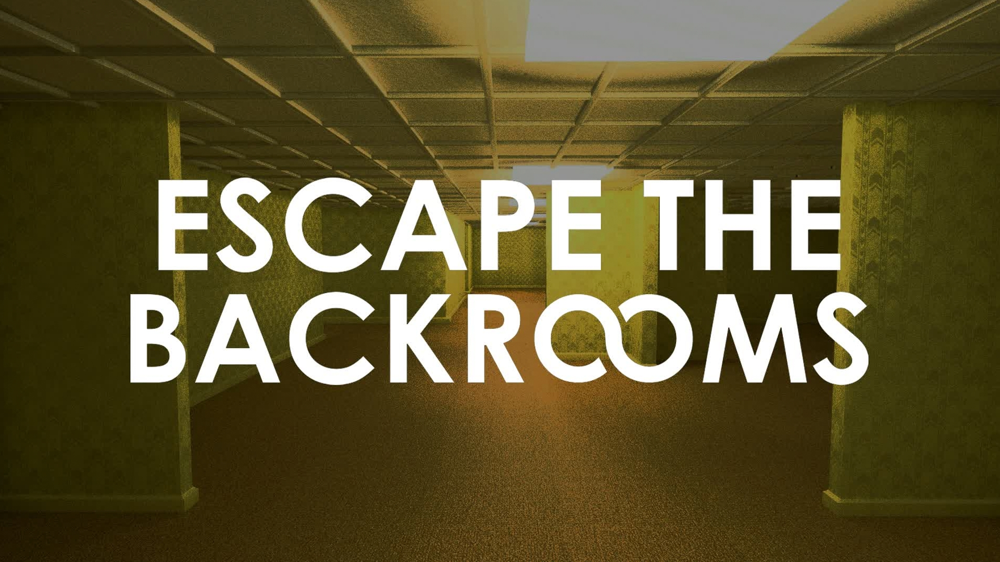

The Backrooms est une légende urbaine effrayante dite creepypasta, diffusée sur Internet. Elle raconte l'histoire d'endroits accessibles en se noclippant (terme se référant au fait de traverser un mur ou une texture dans un jeu vidéo) de la réalité. Cet endroit est considéré comme une dimension parallèle, vide, à plusieurs niveaux connectés entre eux, utilisant pratiquement tous l'esthétique « liminale » ou « liminaire », c'est-à-dire des espaces possédant des caractéristiques telles que des grandes pièces vides et répétitives, donnant une sensation de déjà-vu à tous ceux qui s'y aventureraient.
❮ ❯